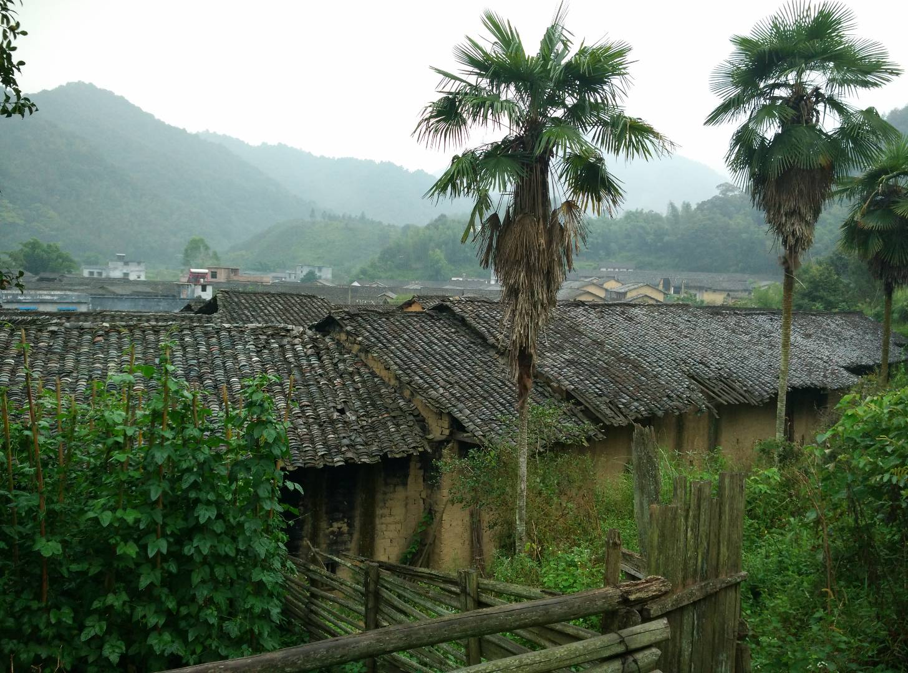
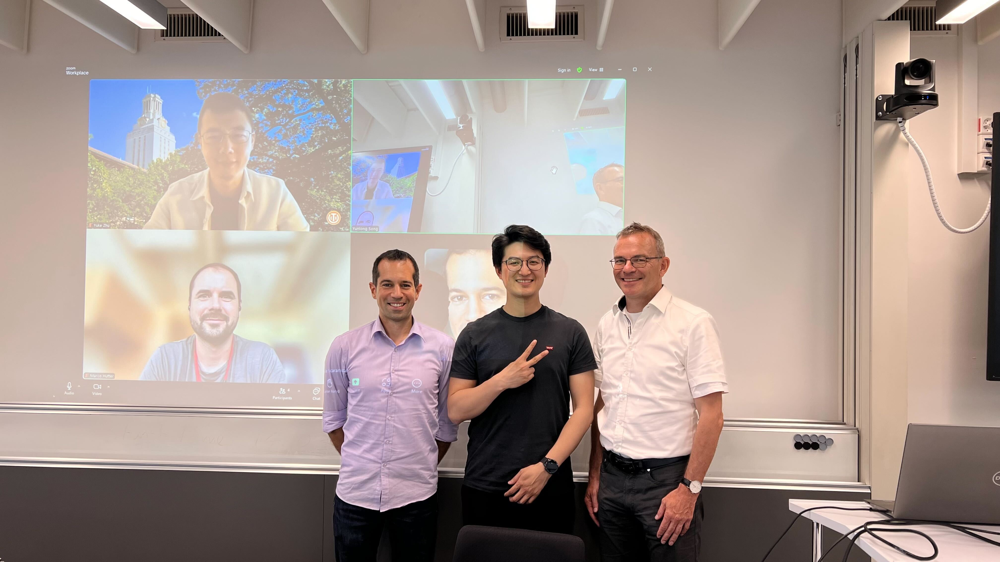

Treat everyone Kindly, and light up the night. --Peter Dinklage
Childhood: Rice, Salted Vegetables, and Books

Home.
I was born in the Year of the Monkey, in a small mud house
nestled in a quiet village in southern China. The village
was surrounded by small mountains and winding rivers.
Everyone there was a farmer, including my parents,
my grandparents, and my great-grandparents.
They worked the fields growing rice and vegetables.
I was the second child in our family. Like my sister, I
attended the village school. Our teachers came from
neighboring towns or villages and stayed at the school
during the week, returning home on weekends. They, too,
were farmers. But they taught us to read and write.
I was the top student in my class.
The school only offered four grades. After finishing fourth
grade, I continued my education in a nearby town. At ten
years old, my friends and I would walk to school every
Sunday afternoon and return home on Friday. We lived in the
school dormitory during the week, though it didn’t provide
food. Each of us brought a bag of rice and a can of salted
vegetables—occasionally, some meat. The principal’s wife
would help cook our rice.
The dormitory was modest, with just two rooms—one for boys
and one for girls. The school supplied only bed frames. We
brought everything else: bedding, mosquito nets, pillows,
and a small wooden box filled with our belongings—clothes,
a toothbrush, books, a bag of rice, and a can of salted vegetables.
It was the beginning of China’s economic reform and
opening-up. My parents left the village to work in the
city, while I stayed behind with my grandparents. Thanks to
the money they sent home, I was able to afford a Xiaobawang and
a cool mountain bike.
Journey to the West: Germany, Switzerland, and USA

PhD defense in Zurich, Switzerland.
After finishing my undergraduate studies in Shanghai, China,
I moved to Germany for my Masters. Then, I moved to Switzerland
to pursue my Ph.D. It was intimidating, trust me!
My peers were top students from top universities. They were sharp, capable,
like Swiss army knives.
But gradually, I adapted and grew.
The work of Yunlong is stellar. (I didn't make this up) Marco Hutter said,
referring to my doctoral work. Those words validated the five years of
dedication, late nights, and countless iterations that went
into my doctoral work.
After completing my doctorate, I moved to the United States
for new adventures.
What did Beckett say? Ever tried. Ever failed. No matter. Try again. Fail again. Fail better. I tried really hard so
many times, yet I failed so many times, epically. I kept trying and learning.
Life is a struggle, literally.
I am grateful for all the people who have helped me along the way.
Education was my key to the world. It opened many many many doors for me.
But, I also understand how hard it is to get a good education and how difficult it is to maintain continuous learning.
Wanna have a chat? I got the stories, but you need to bring the beer.